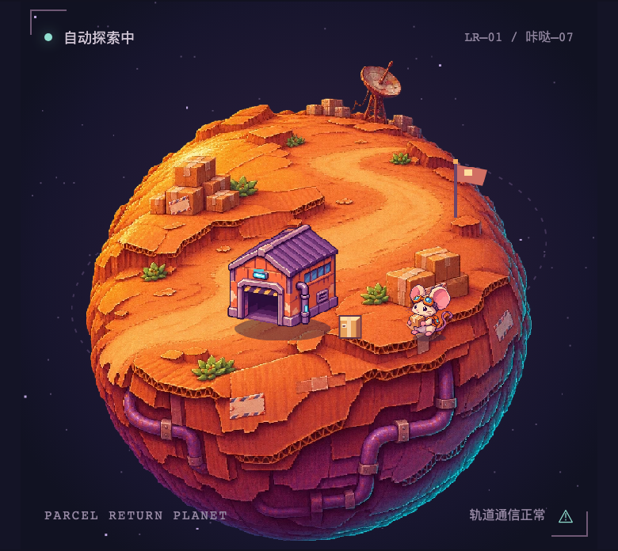
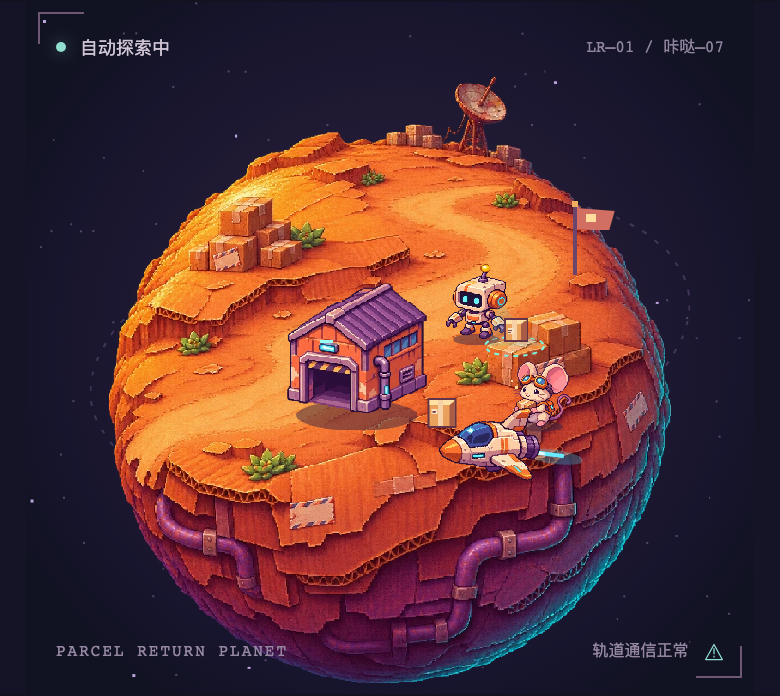
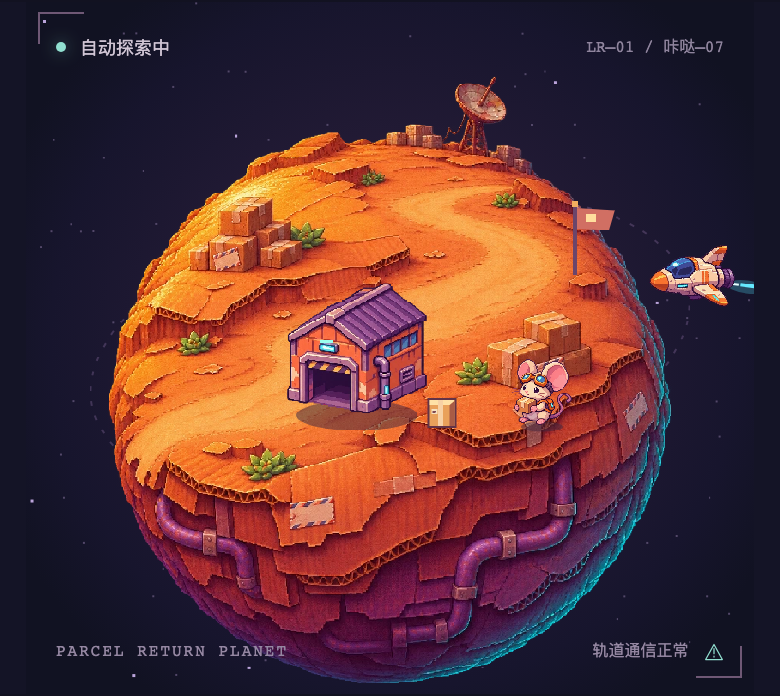
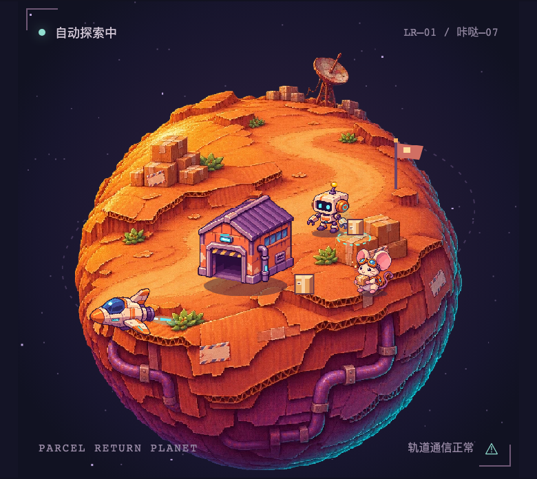
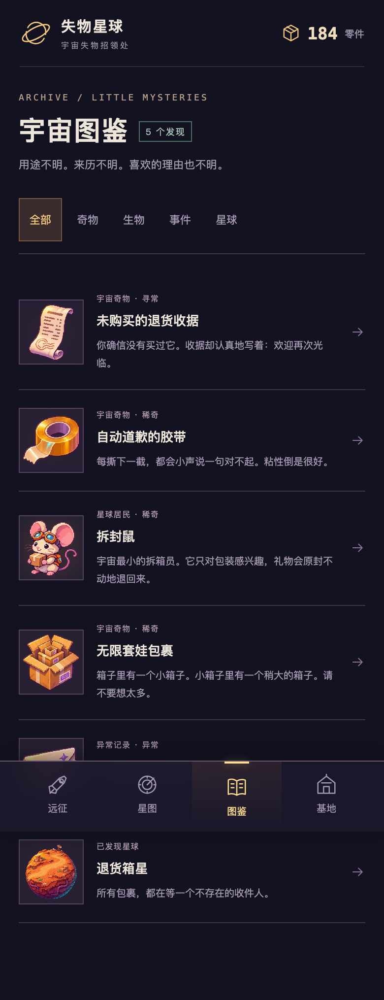
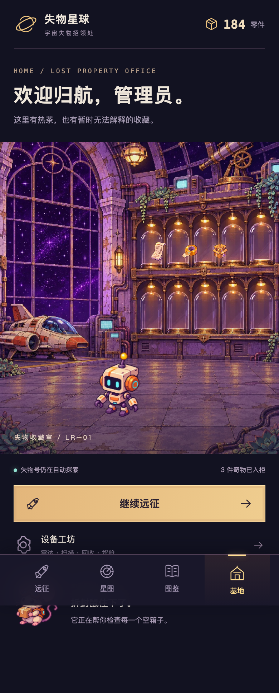
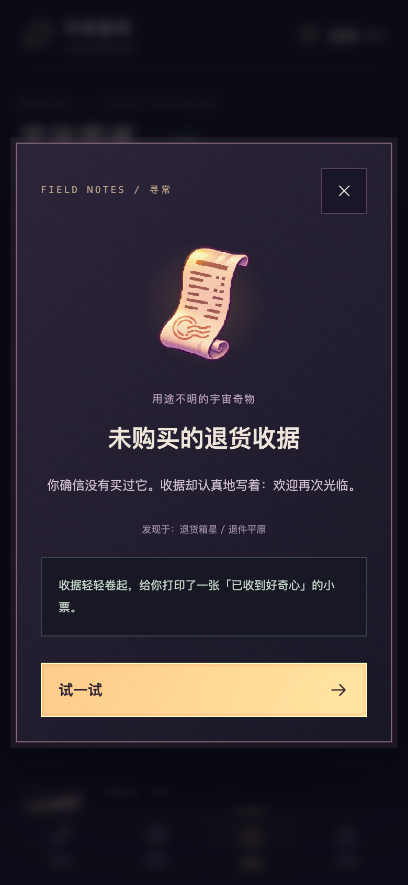
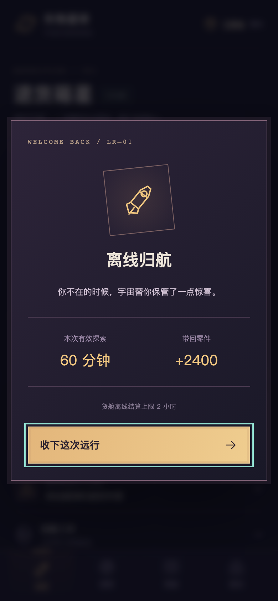
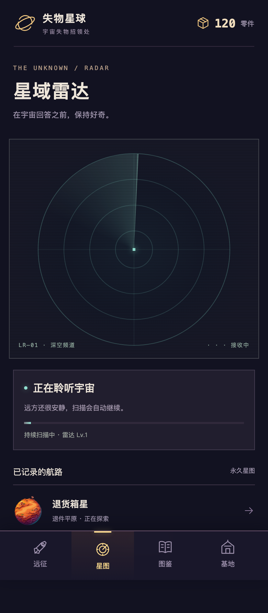

失物星球 / 退件平原
原概念参考与实际分层 2.5D 可玩样板 · 2026-11-02
当前为 Draft 视觉复审。完整球体、角色、仓库与飞船是独立运行时层。手机真机尚未测试；第二颗星球只有雷达发现资料，远征生态后续制作。
参考与实际渲染
 原概念图：方向已认可，属于参考拼版。
原概念图：方向已认可，属于参考拼版。 实际游戏：闭合球体、独立运动与遮挡。UI 重新排版。
实际游戏：闭合球体、独立运动与遮挡。UI 重新排版。实际运行录屏
真实墙钟录制约 12 秒；视频编码 30fps，不等于真机性能认证。
四个遮挡状态
冻结纯视觉时钟复现；不改变存档或奖励。

球背 / 8.8s
球前 / 3.4s
仓库后 / 1.4s
扫描 / 5.2s可玩闭环
以下静态流程图用加速测试时钟推进实际规则，展示收集后的状态；不是新手开局。实际视频仍为真实墙钟录制。

图鉴收集
基地展出
奇物详情
离线归航未知雷达

只有真实已发现的退货箱星；不透露其他主题数量、名单或固定方位。视觉差异与未完成项 · 性能记录 · 原始测量 JSON · 返回游戏